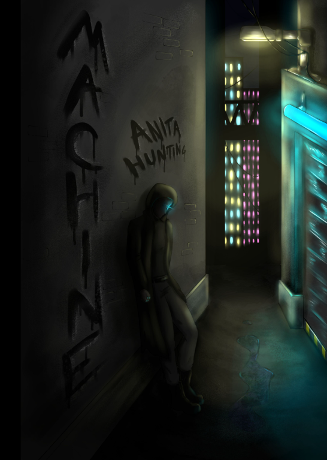

Hey y'all! I would highly recommend checking these out!
The Heart of a Wolf by Amelia Maia
Life as a wolf isn’t easy. Especially a mystic wolf. Moonwatch and her pack face dangers unseen in the form of human hunters and nothing can save them… nothing except leaving the land she was born in. Join Moonwatch and the Stone Creek Pack, based off the Rogue River pack, on an adventure that takes them far out of their comfort zone and brings them to meet creatures they never imagined exsited.

Crescent Legacy by Gabrielle Gervais
Aionia is a world made up of five regions, each with their own laws and governments. Independent of these laws are the guilds, which follow their own paths and live on unique ships that have hidden special properties. Stirring in the world’s shadows is a dark plague that strikes often and without warning. This plague, called Contagion, hinders the peace and safety of everyone in the world. No one is immune. Sixteen-year-old Luna serves in Ranvai, a guild of noble mercenaries who have sworn to never take lives. Living alongside her guild leader, her best friend, and her younger sister, she’s contented with her circumstances; until Contagion, and those who seek to control it, tear everything she knows to shreds. Thrown into new and dangerous circumstances and far from any semblance of peace, Luna is forced to confront the truths of the world, of Contagion, and most importantly, of her own past.

Machine by Anita Hunting
If you’re nothing but a MACHINE, what’s left for you when you lose your purpose?
Blake Cyrus has been raised in a soldiers’ institute since childhood. And he has only one goal — to fight and finally win the war that has plagued his country for decades. But Blake’s future is stopped in its tracks when he becomes the victim of a devastating accident, and the Institute is far too strained by the war to waste time caring about their injured soldiers. Cast out as useless with nothing but a month’s rent in a run-down apartment and a set of cybernetics to replace the limbs he lost, Blake’s only hope comes from his chance meeting with a secretive prizefighter and her strange younger sister. With their aid, he begins to build for himself a new life… but in this war-ruined society slowly falling apart at the seams, each turn blurs the lines between right and wrong and truth and lie, and Blake will soon have to question once and for all who he is and where his loyalties lie.

My Newsletter
Stay updated with my latest book finds and recommendations!